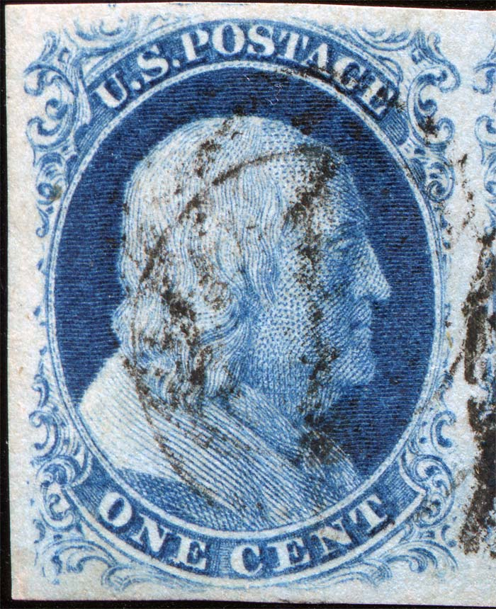
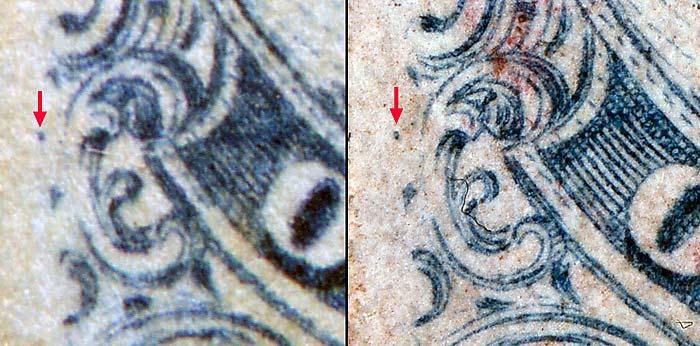
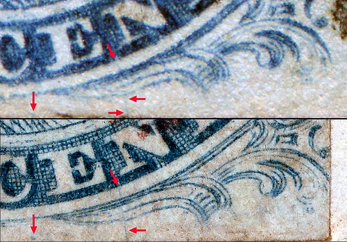
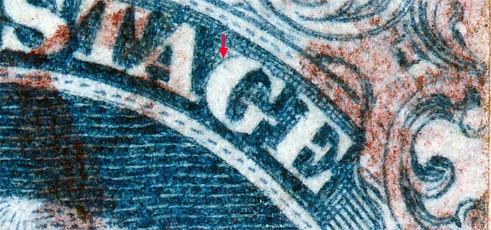
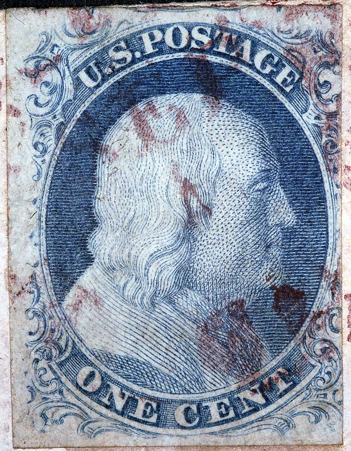

1¢ Franklin Issue of 1851-1857, PLATE 1 EARLY Position 96R1E Type IIIa |
| Scott 8A, Blue, Type IIIa, Relief A, First Condition Only Issued Imperforate |
|
PLATING NOTES: On Plate 1 in its original state (Plate 1 Early), positions 96 to 100R were entered with the "A" relief transfer roll. When the plate was reconditioned in the spring of 1852, to become what we call Plate 1 late, Positions 96R and 97R were re-entered with the "B" relief. Positions 98, 99 and 100 remained "A" reliefs.
|
|  |
| Figure 1. (Below) Strong dot of color to the left of Ornament H as illustrated in the Ashbrook/ Neinken plating diagrams.
 |
| Figure 2. (Below) A dot of color below the CE of CENT and a nearly vertical plate scratch between the EN of CENT not illustrated in the plating diagram but confirmed here as consistent. The dot below the CE of CENT is part of the 11th row effect can be seen nicely on Position 97R1E. Underneath most of the "misplaced A reliefs", and particularly visible on Plate 1Early, are the remnants of the top of the "B" relief - which was beneath "A" on the transfer roll. Position 97R1E shows by far the strongest evidence of this. It is very remarkable on the early state, but still quite evident on the Late state.
 |
| Figure 3. (Below) Small dot of color inside the G of POSTAGE as illustrated in the Ashbrook/ Neinken plating diagrams.
 |
| Figure 4. (Below) The "A" Relief dingle can easily be seen on this patient.
Courtesy of Dr. Alan Brooks  |
| DISCLAIMER and COPYRIGHT INFORMATION: Thanks for visiting this site. I hope you learn something new as we are making new discoveries all the time. You, the visitor, have my permission to link to my pages and to share the INFORMATION with others. The images themselves fall under the fair use guidelines established by the United States Congress and Copyright law. Basically contact us before using. I also ask in return that you send me an e-mail if I have made a mistake, or have made some other technical blunder that in my rush to put these pages up would cause the visitor confusion. Please also visit my other website at www.slingshotvenus.com. and support the live music arts. While your there, be sure to purchase our music. There are not many philatelic rock stars around and we need all the help we can get. :-) I can be reached at: nerdman@ix.netcom.com UPDATE: 11/29/2012 |